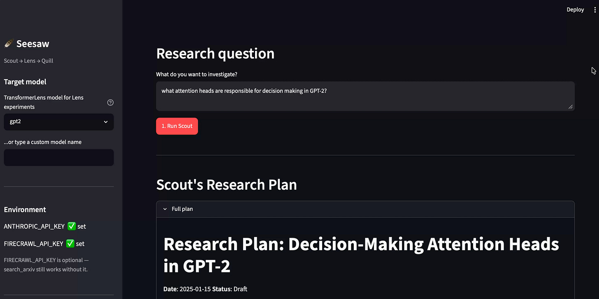
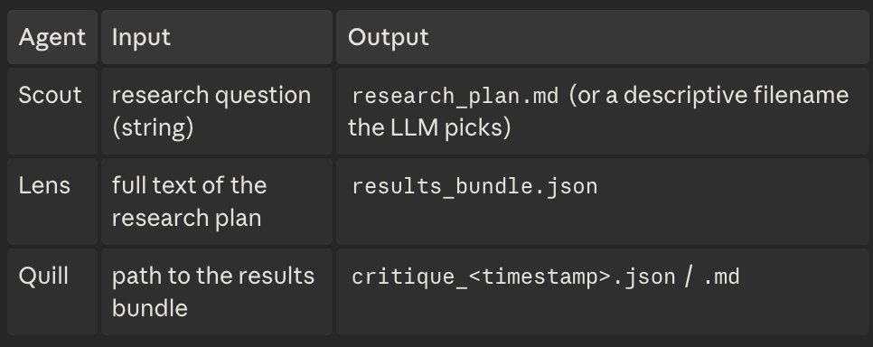

Part 5 of Building Seesaw: Agentic AI for AI Safety Research
Building Seesaw: Agentic AI to do AI Safety Research, Part 5
A walkthrough of first design iteration of the entire agentic system
If you’re new to this series, welcome!
In this series, I document the building of Seesaw, which is a multi-agent system for mechanistic interpretability research and its core architecture powered by 3 unique agents: Scout, Lens, and Quill. Scout plans the research. Lens runs it. Quill reviews and critiques it. You can see the Github repository here.
At this point in the series I’ve gone into depth into the working of two out of three agents. Quill at this point is a four-point sequential workflow agent to review the experimental findings produced by Lens. I think it would be wise to revisit the design of this last agent once I’ve finished building the pipeline. The aim is to build well at the start and the future iterations for improvement would be much faster.
One of my best sources on Agentic AI is the blog called “Designing Effective Agents” by Anthropic. It’s crisp, clear and draws a very good distinction between “workflows” and true agentic patterns. Going by that definition overall this system is a “workflow” and not agentic.
A principle in ML that I really live by, is to keep things simple whenever you can. In this case, I know that the agents will work in sequence: Scout first followed by Lens and Quill. Of course: in the near future do I see a potential Evaluator-Optimizer pattern between Lens and Quill ? Probably. But for now let’s stick to the “Prompt Chaining Workflow” pattern or the pipeline pattern.
This post is the full system tour: how each agent is actually defined and implemented, what goes in and comes out at each boundary, how the MCP layer is wired, where a human sits in the loop, how the orchestrator ties it all together, and what guardrails exist today (and which ones don’t yet).

Agent Definition and Implementation
Every agent in Seesaw lives under <agent>/mcp_server/src/ and shares the exact same folder layout, regardless of whether the agent underneath is a ReAct loop or a LangGraph state machine:
<agent>/mcp_server/src/
├── app/ # agent-specific core logic
├── config/ # settings.py (env vars, paths) + prompts.py (system prompts)
├── db/ # placeholder — no persistence layer yet
├── models/ # Pydantic/dataclass schemas
├── nodes/ # LangGraph node functions (Lens, Quill only)
├── prompts/ # MCP prompt registrations
├── resources/ # MCP resource registrations
├── routers/ # wires tools/resources/prompts onto the FastMCP instance
├── tools/ # standalone callable tools (Scout, Lens)
├── utils/ # shared helpers
├── workflows/ # LangGraph graph builder (Lens, Quill)
└── server.py # create_mcp_server() — entry point for MCP transportI didn’t get this structure right on the first pass (cheat: I followed this awesome course project to get inspiration for the project structure), starting first with notebooks only. Scout and Lens started out with everything crammed into app/, and Quill’s schemas lived in the wrong place too. Once the pattern repeated across three agents it became obvious what belonged where, and I went back and refactored all three to match by moving schemas into models/, splitting multi-node workflows into individual files under nodes/, and giving utils/ and the MCP layer (routers/, resources/, prompts/) real content instead of stubs. Consistency across agents matters more here than getting any single agent “perfect” the first time.
Scout is a LangGraph ReAct agent (create_react_agent): it decides for itself, turn by turn, which of its five tools to call and when it’s done. This is the one part of the system that’s genuinely agentic in the Anthropic sense: an LLM in a loop, using tools, deciding when to stop.
Lens is a LangGraph StateGraph with six fixed nodes: parse_plan, load_model, run_experiment, interpret_result, check_followup, collect_results, with a loop back to run_experiment if check_followup decides more evidence is needed (capped by MAX_FOLLOWUPS). No ReAct loop — the control flow is explicit.
Quill is a linear four-node StateGraph: critique_experiments → identify_gaps → generate_followups → save_critique. No branching, no loop. The interesting version of Quill - the one that can actually push back and ask Lens to re-run something, needs the Evaluator-Optimizer pattern I mentioned above, and I’m deliberately not building that until the base pipeline is solid. You can view the Seesaw codebase on Github.
Note: So, a common point of confusion for me was “can an agent be an MCP server?”. Technically, yes. MCP Servers are simply a “standard” to expose resources to an agent and these resources can be anything. An agent can also act as an MCP Server by exposing its reasoning and tools to another agent. This is called “Agent-as-a-tool” and the process itself is Agent-to-Agent Communication (A2A).
Input Output definitions
The contract between agents is a plain string in, a file on disk out. No agent passes an in-memory object to the next one.

In this version, every agent writes its output to disk as a Markdown file. Writing to disk between every stage means the user can inspect exactly what Scout produced before Lens ever sees it, re-run any single stage without re-running the ones before it, and debug a bad Lens run without needing to reconstruct Scout’s output from scratch. The cost is that it slows everything down since every handoff is a file read, but for a research tool where a human is checking in at two points anyway it’s inevitable. For future versions: it makes a lot of sense for the user to have their own personal database to save these interactions, like a typical interface.
Tool and Resource definitions
Scout has five tools: search_arxiv · search_arxiv_web · search_web · scrape_url · save_research_plan
Lens has five tools as well, each independently callable with a model_name and a set of prompts and parameters: logit_lens · attention_pattern · ablation · activation_patching · direct_logit_attribution
Quill has zero tools of its own. It’s a pure reasoning agent over a bundle it’s handed there’s nothing external for it to call. What it exposes over MCP instead is a single tool, critique_experiment_bundle, which wraps the entire four-node workflow, because the individual nodes aren’t independently useful outside their sequence.
Each agent also exposes an MCP resource which is a read-only, URI-addressed piece of state:
Scout:
system://statusmodel config, whetherFIRECRAWL_API_KEYis set, which plans have been savedLens:
results://last-bundlethe most recent results bundle on diskQuill:
system://statusmodel config, which critique reports exist
And each exposes an MCP prompt: a piece of guidance an external client can pull and inject into its own context, rather than calling a tool:
Scout:
research_instructionswhich is the full research workflowLens:
tool_selection_guidewhich tool to reach for first, and whyQuill:
critique_instructionsthe three critique-stage system prompts, concatenated
The distinction between tools, resources, and prompts is one I didn’t take seriously at first it’s tempting to just make everything a tool. But resources and prompts exist for a reason: a resource is something a client reads without side effects (checking status shouldn’t require the ceremony of a tool call), and a prompt is guidance meant to be injected into a conversation, not executed. Using all three properly makes each agent’s MCP surface genuinely self-describing to any client, not just the one I built. I’m nowhere close to being done with the design yet, so future blogs will revisit every agent choice and inspect it in detail.
MCP Server Setup
Every agent’s server.py follows the same shape:
def create_mcp_server() -> FastMCP:
mcp = FastMCP("<agent>")
register_mcp_tools(mcp)
register_mcp_resources(mcp)
register_mcp_prompts(mcp)
return mcp
mcp = create_mcp_server()
if __name__ == "__main__":
mcp.run()The actual registration logic lives in routers/ and routers/tools.py, routers/resources.py, routers/prompts.py which import from tools/, resources/, prompts/ and wire each function onto the FastMCP instance with @mcp.tool(), @mcp.resource(), @mcp.prompt(). This mirrors a FastAPI-style router pattern deliberately: the registration layer is separate from the implementation, so you can look at server.py and immediately see the full surface area of what an agent exposes without reading a single line of business logic.
Running any agent standalone is one command:
python -m scout.mcp_server.src.server # or lens / quillBy default this uses stdio transport, meant for a parent process (Claude Desktop, another agent) to spawn and talk to over stdin/stdout. I also built an interactive REPL client for Lens (lens/mcp_client/) that connects in-memory via fastmcp.Client, supporting /tools, /resources, /prompts, /prompt/<name>, /resource/<uri>, and free-text messages routed through a ReAct agent wrapping the MCP tools. It’s the fastest way to poke at an agent’s tools directly without going through the full pipeline.
The thing I’d tell past-me: test the MCP layer through the actual protocol, not just by calling the underlying Python functions. I caught a real bug this way: search_web was silently returning three garbage results (N/A, N/A, N/A) instead of raising an error, because the response object was a pydantic model and iterating over it directly yields (field_name, value) pairs instead of throwing a TypeError like a dict would. Calling the tool through fastmcp.Client and inspecting the actual output caught it in a way that unit-testing the function in isolation wouldn’t have.
Human in the Loop Checkpoints
Scout → research_plan.md
↓ [approve the plan?]
Lens → results_bundle.json
↓ [send results to Quill?]
Quill → critique_<timestamp>.json / .mdIn the CLI, this is a blocking input() prompt (orchestrator/src/hitl.py): you see the plan, you type y or n, the pipeline either continues or stops. In the simple Web UI though, HITL has to recognize that a button click is the checkpoint. The UI calls the three orchestrator clients (run_scout, run_lens, run_quill) directly, stage by stage, and persists progress across reruns in st.session_state. The CLI’s HITL and the UI’s HITL are two different mechanisms serving the same purpose in different methods that suit the environment.
Orchestrator
Keeping things simple, the orchestrator is not an agent (because the agents move in sequence and a sophisticated orchestrator is simply not required at this point). It's a plain Python function that calls Scout, waits, calls Lens, waits, calls Quill:
def run_pipeline(research_question: str, skip_hitl: bool = False) -> dict:
plan_path = run_scout(research_question)
# [HITL: approve plan?]
bundle, bundle_path = run_lens(plan_path.read_text())
# [HITL: send to Quill?]
report, report_path = run_quill(bundle_path)
return {"plan_path": plan_path, "bundle_path": bundle_path,
"report_path": report_path, "report": report}No routing logic, no LLM deciding what happens next. I thought seriously about whether the orchestrator needed to be smarter should it read Quill’s follow-up suggestions and automatically kick off another Lens run? The moment I add that, I’ve moved from “the orchestrator connects three agents” to “the orchestrator makes decisions,” and that’s exactly the kind of complexity that should wait we finish designing all aspects of the system including evaluations.
Guardrails
Guardrails so far are minimal and honest about it:
Sandboxed execution: every Lens experiment runs in a
ThreadPoolExecutorwith a configurable timeout (SANDBOX_TIMEOUT, default 300s). A crash or hang in one experiment gets caught and converted to afailed/timeoutExperimentResultrather than taking down the whole workflow.Follow-up cap:
MAX_FOLLOWUPSbounds how many times Lens can loop back on itself chasing a follow-up experiment, so an LLM that keeps deciding “one more experiment” can’t run forever.Structured outputs everywhere: every LLM call that needs to feed the next stage uses
with_structured_outputagainst a Pydantic schema, not free-text parsing. Quill’s critique, Lens’s follow-up decisions, Scout’s parsed experiment specs all typed.HITL as the real guardrail: honestly, the two approval checkpoints are doing most of the actual safety work right now. A human reads the plan before any TransformerLens experiment runs, and reads the results before they go to Quill for critique.
What’s not there yet, and I’d rather say so than pretend otherwise: no rate limiting on external API calls (I hit arXiv’s 429 more than once testing this), no cost ceiling on Claude usage per run, no sandbox around what a “prompt” can ask Lens to do beyond the five fixed tools, no persistence layer (db/ is a stub in every agent). None of these are hard problems, they’re just not solved yet, and I’d rather build the pipeline correctly first and add guardrails as the actual failure modes show up than guess at them in advance.
Demo
Now, to the final moment. Running the entire agentic system. I’ve done a simple WebUI with Streamlit so it’s easier to visualize web outputs (also gives me a vision on how it will look like in production). See the video below (note that the video would require some bandwidth on your end):
First up: the system works end-to-end! So, this is good news. Now viewing the entire workflow tells you so much about the behavior of agents depending on the input passed to them from the previous agent.
Scout: The search results are interesting where Scout picks up a lot of unrelated papers and the hypothesis generation process is vague (this could also be due to the input question itself). It would be really beneficial to refine the search strategy and additionally use something like Perplexity’s Deep Research as tool to allow more variation in input questions without compromising output quality. Also, here the agent isn’t reasoning enough. Maybe ask it to include an explanation for each of the hypothesis and for experiments chosen.
Lens: Several experiments fail. This is either due to a bad tool call (passing wrong parameters) or a bad tool description. First order of business is to ensure Lens gets the correct parameters and executes all experiments successfully. Right now there’s a fallback to move on despite failed experiments, but we will need retry mechanisms per experiment (being creative: maybe even a troubleshooting node/step or sub-agent?)
Quill: Quill is very interesting because it helps me assess the quality of Scout and Lens. First and foremost it points out that we do not have enough prompts per experiment (variation) to provide enough evidence towards a hypothesis. Very valid improvement required for Scout. So, I’d fix Scout and Lens before building a loop with Quill since I’m the least confident about this evaluation loop.
And that’s it! In the next posts, I will first build a validation pipeline for the agents and system (most likely take concrete problems solved in literature and compare the outputs of each agent with the results in the literature), this will contain intermittent debugging exercises. After this, do a revisit of the design choices/add features and put it into production. Stay tuned!
Originally published on Mind & AI on Substack.